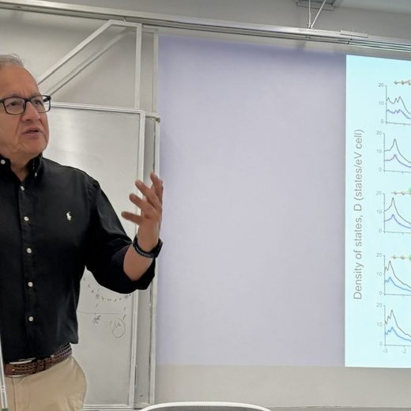
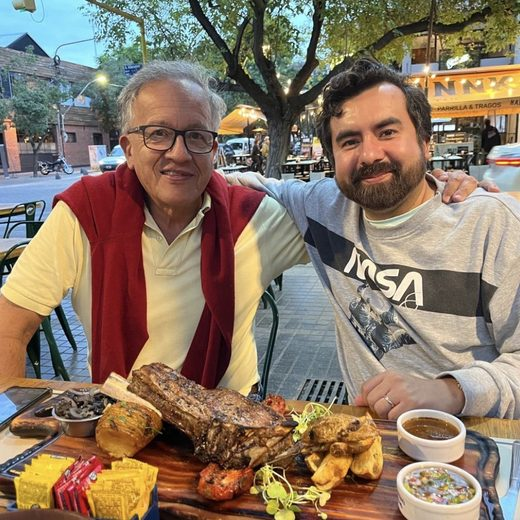
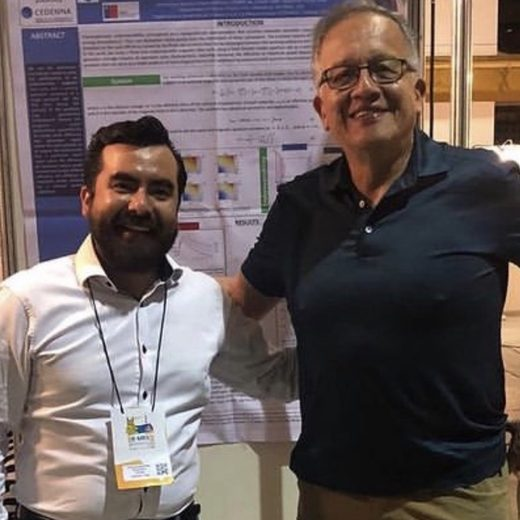
Thesis advisor · Full Professor, UTFSMDirector de tesis · Profesor Titular, UTFSMDoktorvater · Professor, UTFSM博士导师 · UTFSM 正教授
Full Professor of Theoretical Physics and Director of the PhD Program in Physics at UTFSM. Works on magnetism, electronic properties of modern materials, nanotechnology and medical physics.Profesor Titular de Física Teórica y Director del Programa de Doctorado en Física de la UTFSM. Trabaja en magnetismo, propiedades electrónicas de materiales modernos, nanotecnología y física médica.Ordentlicher Professor für Theoretische Physik und Direktor des Physik-Promotionsprogramms der UTFSM. Arbeitet zu Magnetismus, elektronischen Eigenschaften moderner Materialien, Nanotechnologie und medizinischer Physik.UTFSM 理论物理正教授、物理博士项目主任。研究磁学、现代材料的电子性质、纳米技术与医学物理。
✉ Email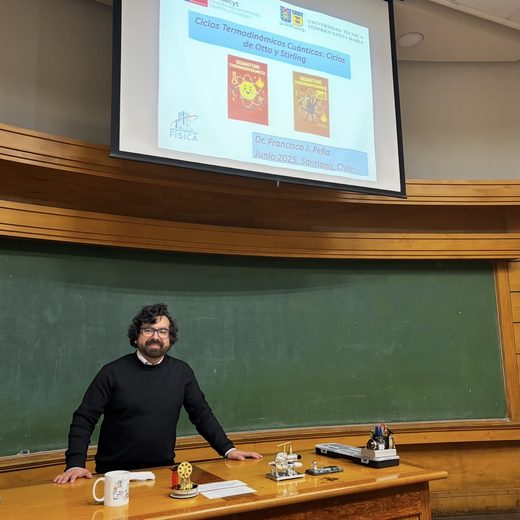
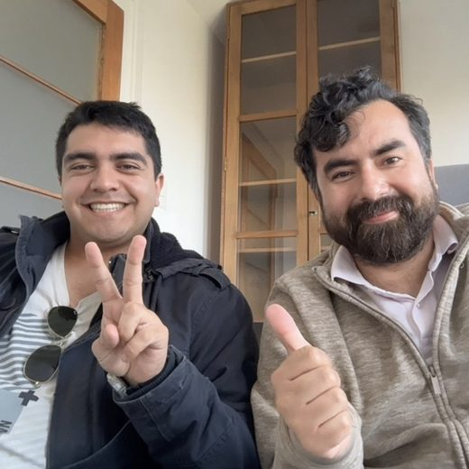
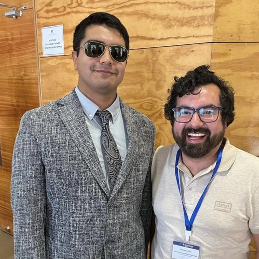
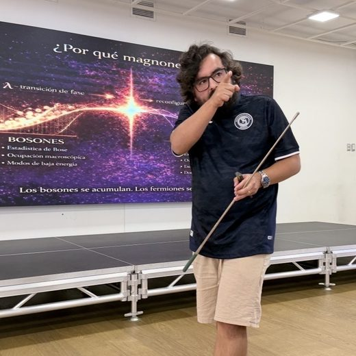
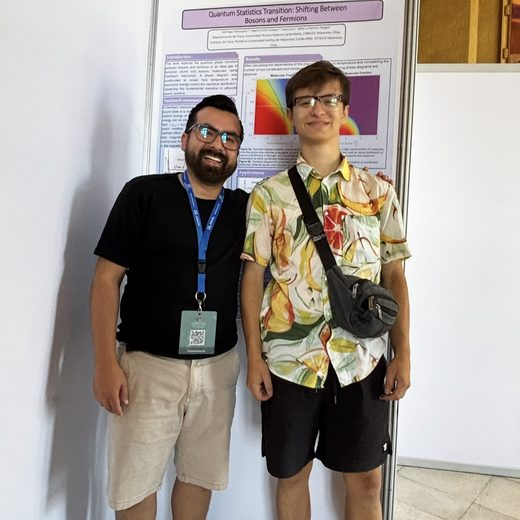
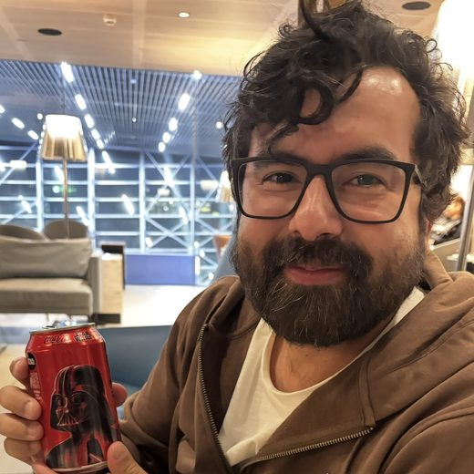
PhD in Physics (PUCV, 2015)Dr. en Física (PUCV, 2015)Dr. der Physik (PUCV, 2015)物理学博士（PUCV，2015）
Academic Researcher / Assistant Professor · USSAcadémico Investigador / Profesor Asistente · USSWissenschaftl. Mitarbeiter / Assistenzprofessor · USS研究员／助理教授 · USS
Specialist in quantum thermodynamics and energy transfer in nanosystems; long-time collaborator on my work.Especialista en termodinámica cuántica y transferencia de energía en nanosistemas; colaborador de larga data en mi trabajo.Spezialist für Quantenthermodynamik und Energietransfer in Nanosystemen; langjähriger Mitarbeiter an meiner Arbeit.专注量子热力学与纳米系统中的能量传递；长期合作者。
✉ Email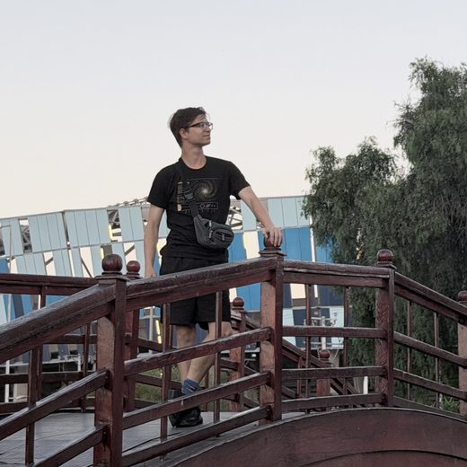
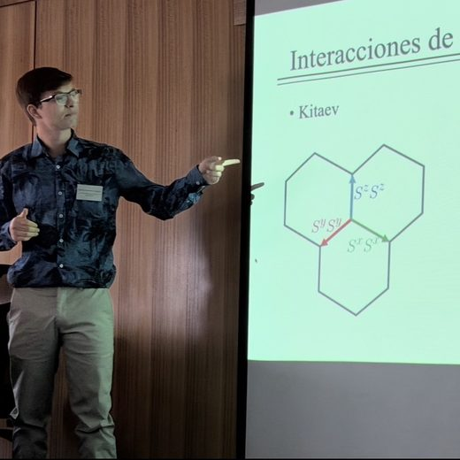
PhD student · UTFSM & PUCVEstudiante de doctorado · UTFSM y PUCVDoktorand · UTFSM & PUCV博士研究生 · UTFSM 与 PUCV
PhD student in the joint Physics program at UTFSM & PUCV. Works on quantum thermodynamics and critical quantum engines, co-author on several of our recent works.Estudiante del programa conjunto de Doctorado en Física UTFSM/PUCV. Trabaja en termodinámica cuántica y motores cuánticos críticos, coautor de varios de nuestros trabajos recientes.Doktorand im gemeinsamen Physikprogramm der UTFSM & PUCV. Arbeitet an Quantenthermodynamik und kritischen Quantenmaschinen, Mitautor mehrerer unserer jüngsten Arbeiten.UTFSM/PUCV 联合物理博士项目的研究生。研究量子热力学与临界量子热机，我们近期多篇论文的合著者。